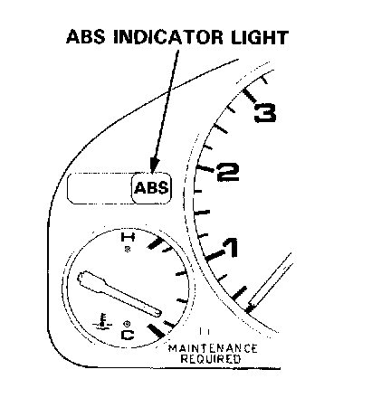

ABS Warning Light
Anti-lock Brake System (ABS) Indicator LightTemporary Driving Conditions:
1. The ABS indicator light comes on and the ABS control unit memorizes the Diagnostic Trouble Code (DTC) under certain conditions.
NOTE: The DTCs are explained. DTC List - Antilock Brake System
- The tire(s) adhesion is lost due to excessive cornering speed.
DTCs: 5, 5-4, 5-8.
- The vehicle loses traction when starting from a stuck condition on a muddy, snowy, or sandy road.
DTCs: 4-1, 4-2, 4-4, 4-8.
- When the parking brake is applied for more than 30 seconds while the vehicle is being driven.
DTC: 2-1.
- The vehicle is driven on an extremely rough road.

The ABS is OK, if the ABS indicator light goes off after the engine is restarted.
2. If you receive a customer's report that the ABS indicator light sometimes comes on, check the system using the ALB checker to confirm whether there is any trouble in the system. Function Checks
3. The ABS indicator light will come on and the ABS control unit will memorize a DTC when there is insufficient battery voltage to the ABS control unit. An example would be when the battery is so weak that the car must be jump-started. After the battery is sufficiently recharged, the ABS indicator light will work normally after the engine is stopped and restarted.
However, after recharging the battery, the DTC must be cleared from the ABS control unit's memory by disconnecting the ABS B2 (15 A) fuse in the under- hood fuse/relay box for at least three seconds.
ABS Indicator Light Circuit:
CAUTION: Use only the digital multimeter to check the system.
1. The ABS indicator light does not go on when the ignition switch is turned on.
Check the following items. If they are OK, check the ABS control unit connectors. If not loose or disconnected, substitute a known-good ABS control unit and recheck:
- Blown ABS indicator light bulb.
- Open circuit in YEL wire between the No. 13 BACK-LIP LIGHTS, TURN SIGNALS (7.5 A) fuse in the under-dash fuse/relay box and gauge assembly.
- Open circuit in BLU/RED wire between the gauge assembly and ABS control unit.
- Poor ground connection between the ABS control unit and the body.
2. The ABS indicator light remains ON after the engine is started, however the ABS indicator light does not blink any ETC. Check the following items:
- Loose or poor connection of the wire harness at the ABS control unit.
- Faulty ABS B2 (15 A) fuse in the under-hood fuse/relay box.
- Open circuit in WHT wire between the ABS B2 (15 A) fuse in the under-hood fuse/relay box and ABS control unit.
- Open circuit in YEL/BLK wire between the No.3 REAR DEFROSTER RELAY, COOLING FAN RELAY (15 A) fuse in the under-dash fuse/relay box and ABS control unit.
- Short circuit in BLU/RED wire between the gauge assembly and ABS control unit.
- Open circuit in WHT/BLU wire between the alternator and ABS control unit.
If the problem is not found, substitute a known-good ABS control unit and recheck whether the ABS indicator light remains ON.